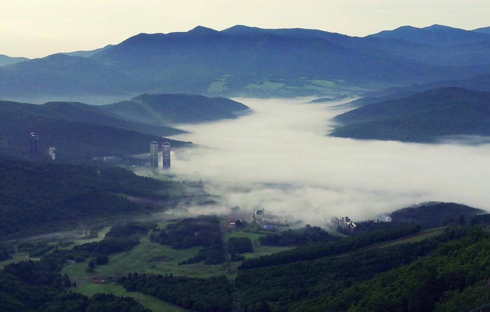
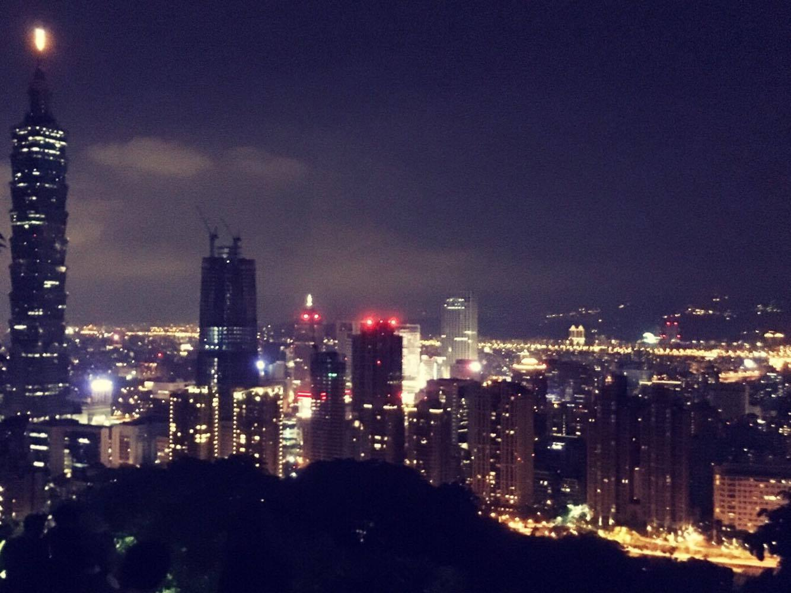
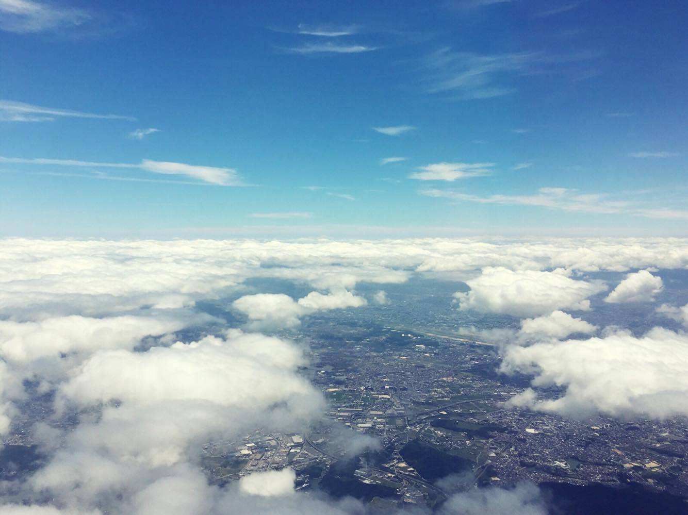
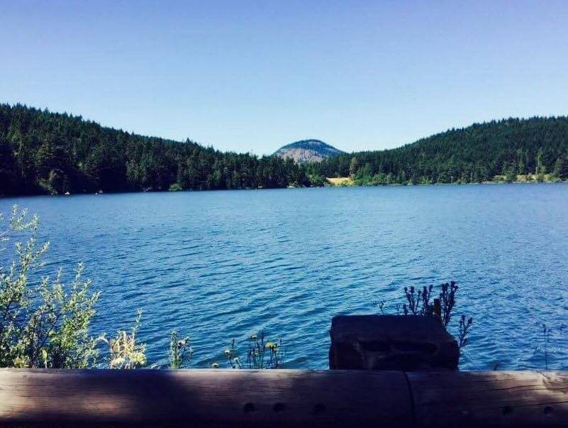
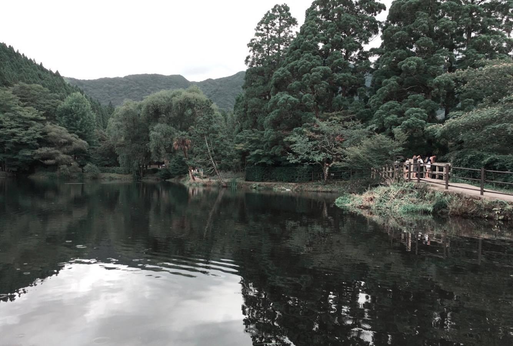

1996
over look



DATE : 2013/07/21
PLACE : Hokkaido
置身於雲層之上，感受到鳥兒呼吸的氣息，多麼美妙，多麼清新
DATE : 2016/07/01
PLACE : Xiangshan
我喜歡鳥瞰整個台北，感受這城市的溫度，腳下的台北用單手足以握住
DATE : 2016/07/15
PALCE : SKY
我正在飛行，正穿梭於雲層中像是有著竹蜻蜓般的悠遊於沒有邊際的天空
uncanny workmanship
DATE : 2016/07/03
PLACE : CHI-MEI MUSEUM
美到不能再美的博物館，有多希望我能成為這裡的一分子
DATE : 2016/08/14
PALCE : Yilan(Plum Blossom Lake)
陽光就這麼灑在看似沒有盡頭的吊橋，讓土色的吊橋看起來閃閃發光
DATE : 2016/07/11
PLACE : Fukuoka
小船們有著不同的故事，也許悲傷，也許歡樂，但他們相同得都承載著人們的希望
quiet


DATE : 2015/08/03
PLACE : rattle snake
既悠然又寂靜，像極了人間仙境，看著湖面的山中倒影，心境感覺又更寬闊了呢
DATE : 2016/07/12
PLACE : Yufuin
綿綿細雨打在禁止不動的水面上，多麼的絢麗